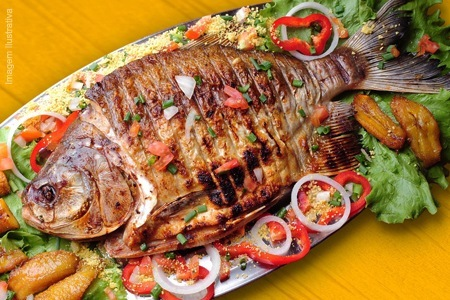
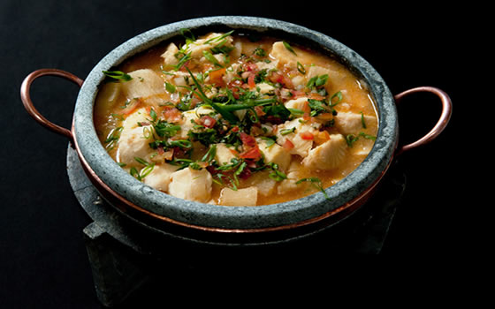

Filé de Tilápia
Ingredientes:
2 filés de tilápia Minerva
1/2 pimentão amarelo picado
1/2 pimentão vermelho picado
1 limão siciliano
Salsinha a gosto
Azeite de oliva, Sal a gosto, Pimenta-do-reino preta moída a gosto
Farinha de trigo a gosto (opcional)
Para começar, tempere com os filés de tilápia Minerva com sal, pimenta e metade do suco de limão.
Adicione um fio de azeite de oliva generoso à frigideira e leve para esquentar.
Quando o azeite estiver quente, adicione os filés de peixe e frite por cerca de 5 minutos de cada lado ou até dourar bem.
Se você tem dificuldades para não deixar o peixe grudar na frigideira, você pode passar um pouco de farinha de trigo de ambos os lados antes de levá-lo ao fogo.
Retire os filés de peixe da frigideira e reserve. Agora leve os pimentões picados para refogar, lembrando de temperá-los com um pouco de sal e pimenta também.
Enquanto eles refogam na frigideira, adicione o restante do suco de limão. Assim que os legumes estiverem no ponto que você gosta, sirva com o peixe polvilhando salsinha picada. Bom apetite!
Pacu Assado
Ingredientes:
1 Pacu
Óleo
Cebola
Alho
Sal
Cebolinha verde
Coentro
Limão
1/2 copo de farinho de trigo
1/2 copo de fubá de milho
Limpe o pacu com bastante limão, retalhe-o, tempere-o com alho, sal, limão coentro e cebolinha-verde. Deixe nesse tempero por alguns minutos, virando-o de um lado para o outro. Em seguida, encape-o com a mistura de fubá e farinha de trigo. Unte uma assadeira com óleo e coloque o pacu, levando para assar, tomando o cuidade de colocar um pouco de óleo em cima do peixe, para ajudar a dourar. Quando estiver dourado está pronto. Sirva quente, acompanhado de arroz e salada. Obs.: para rechear o pacu, faça uma farofa de couve com manteiga ou de pimentão. Coloque-a dentro do peixe e costure-o, antes de assar.
Mojica de Pintado
Ingredientes:
1 kg de pintado
1 dente de alho amassado
1 kg de mandioca
1 1/2 litro de água quente
1 pimentão verde em cubos
2 tomates sem sementes em cubos
1 cebola picada
Cebolinha verde e coentro picado a gosto
pimenta-malagueta e sal a gosto
Limpe o pintado, tirando as espinhas e a pele. Corte-o em cubos pequenos e tempere com alho e sal. Reserve. Descasque a mandioca e corte-a em cubos do mesmo tamanho do peixe. Em uma panela, adicione o pimentão, os tomates, a cebola, o coentro, o sal, a pimenta e a mandioca. Cubra com água quente, tampe e cozinhe por 15 min. Junte os cubos de peixe e cozinhe por mais 15 min. Sirva com pirão feito do caldo do peixe.
Salmão Grelhado
Ingredientes:
200 gr de salmão em postas
1 dente de alho amassado
Sal e pimenta a gosto
1 colher (sopa) de manteiga
Molho:
1 unidade de limão
1 colher (sopa) de manteiga
1 colher (sopa) de salsinha picada
Sal e pimenta a gosto
Tempere os filés com o alho, o sal, e a pimenta, deixe descansar por 30 minutos.
Coloque a manteiga em uma Frigideira Antiaderente Rochedo Rock in Rio 26cm e grelhe por 8 minutos em fogo médio.
Vire com cuidado para não quebrar, e grelhe por mais 7 minutos aproximadamente.
Molho:
Derreta a manteiga com a salsinha em fogo baixo.
Adicione o suco do limão, mexendo vigorosamente, e deixe a mistura aquecer.
Coloque os filés de salmão no prato a ser servido e regue com o molho de limão.
Decore com folhas de salsinha.